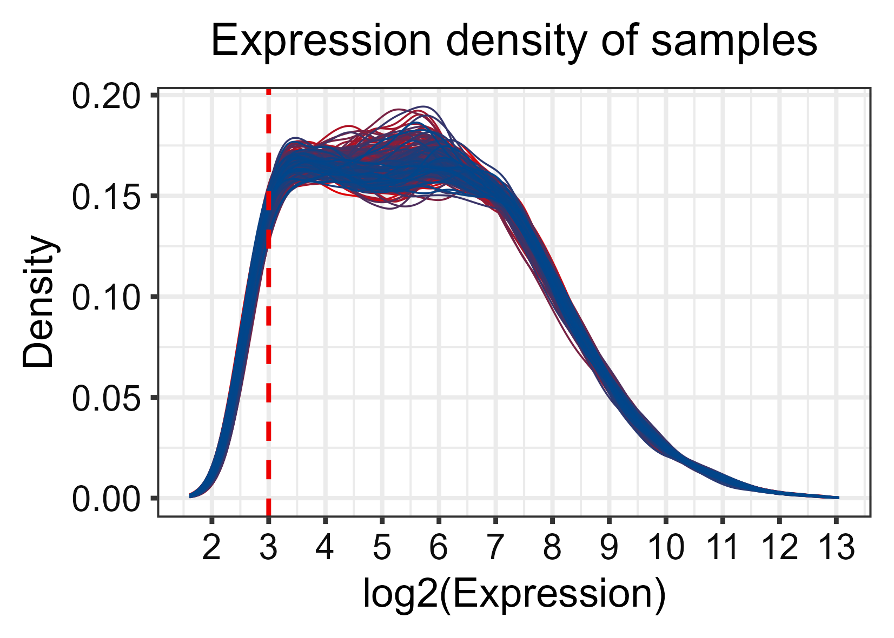
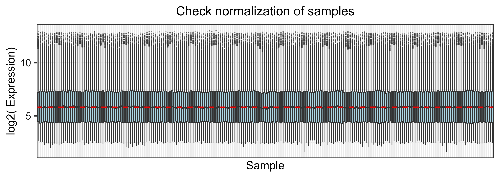
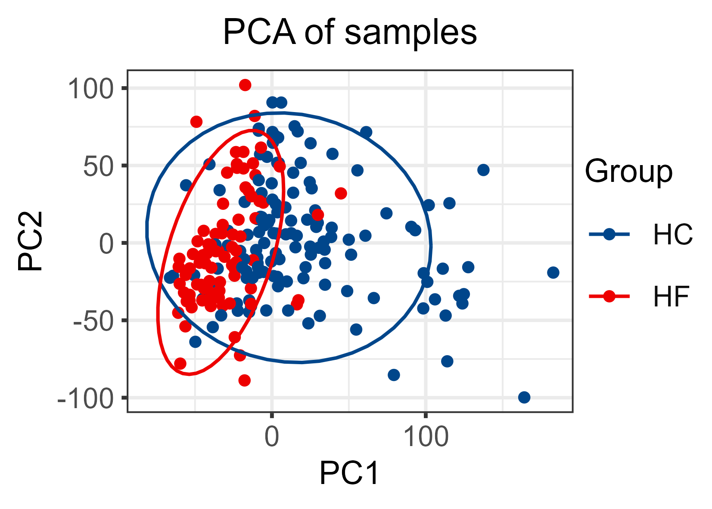
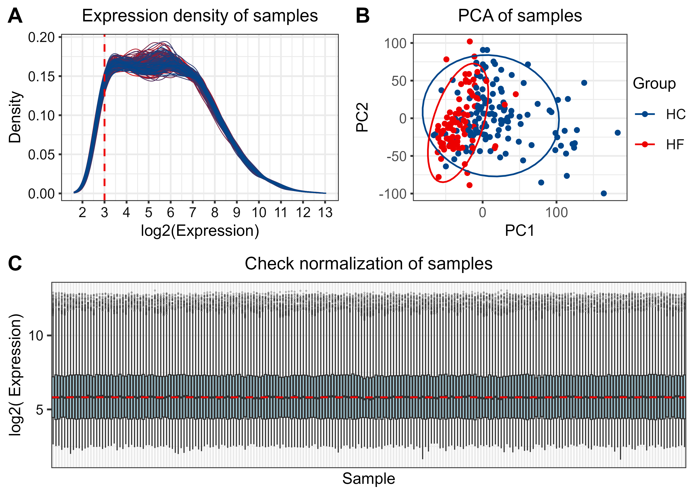
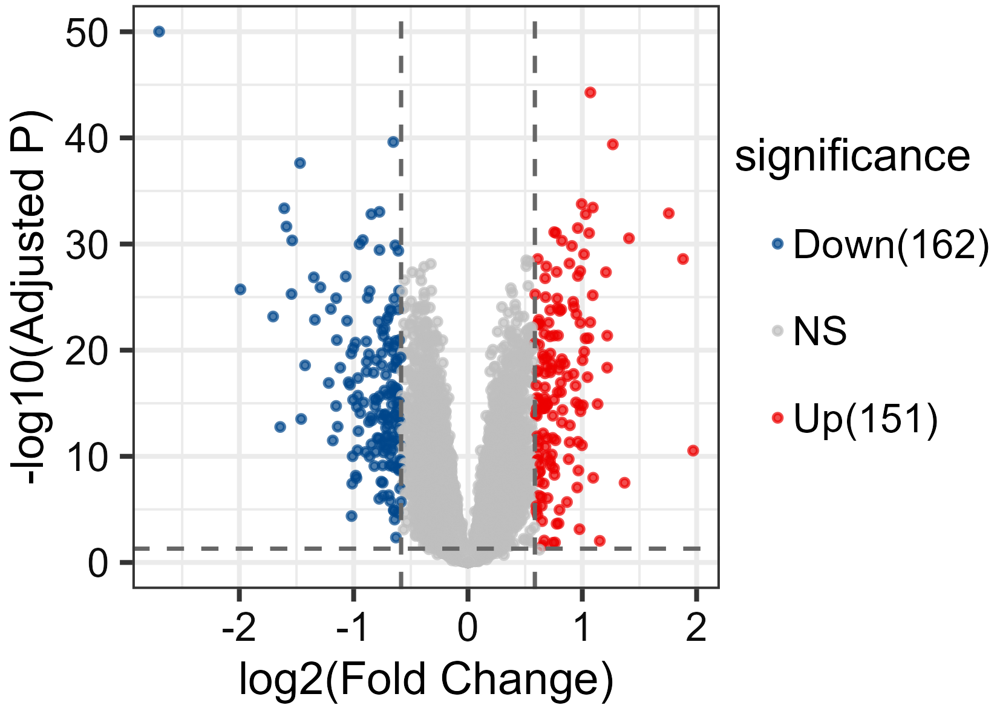
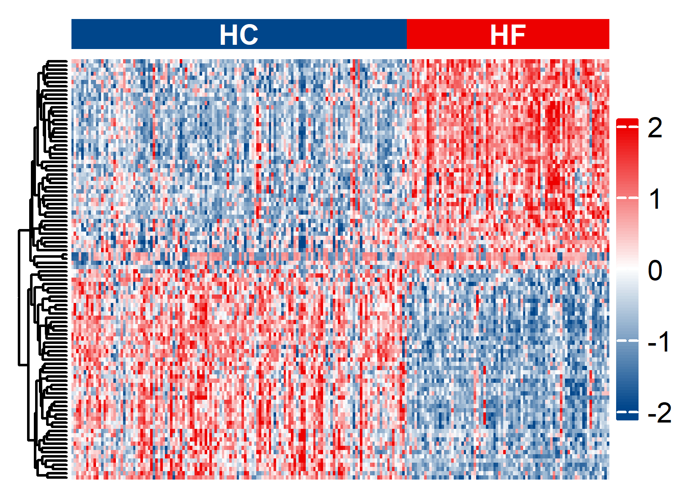
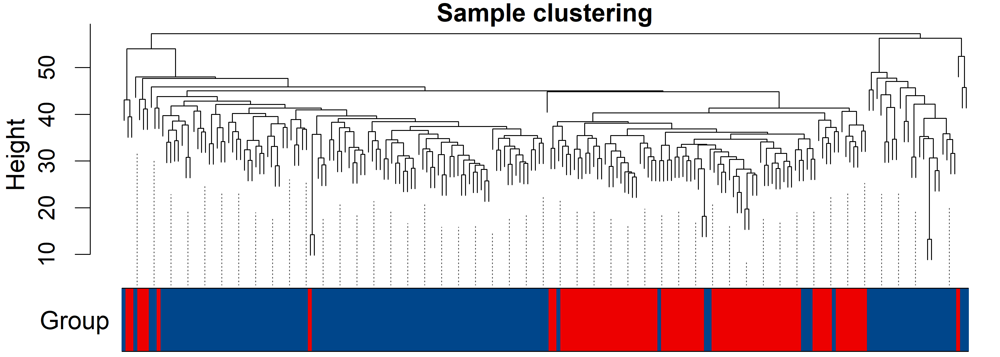
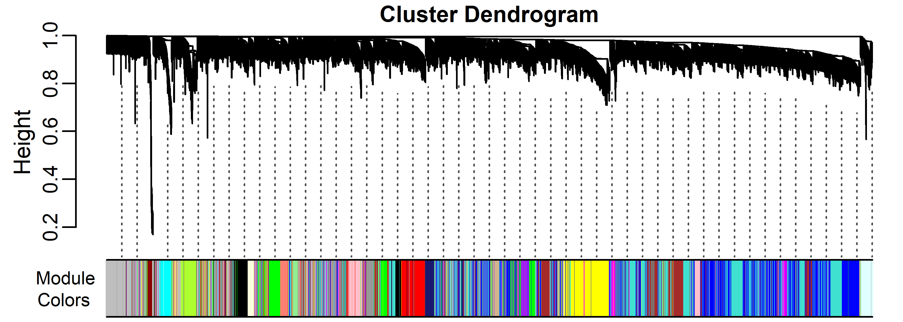
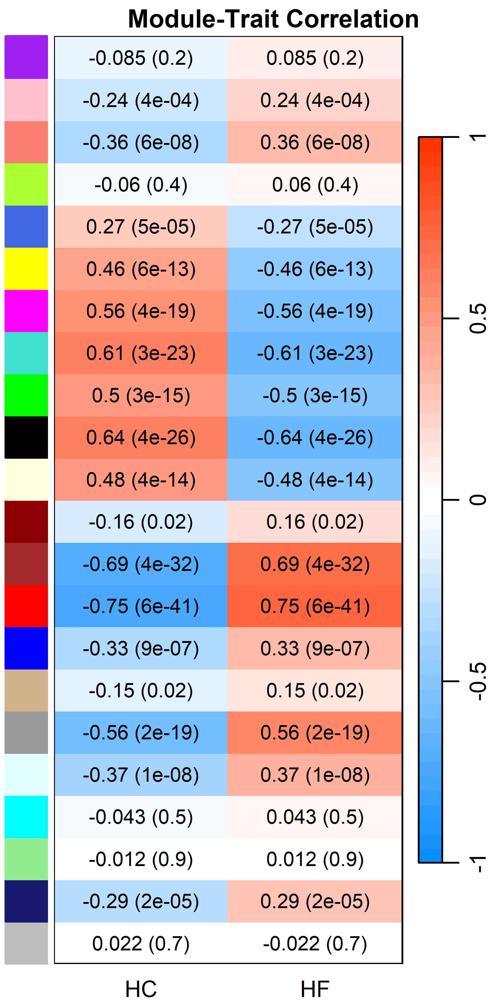
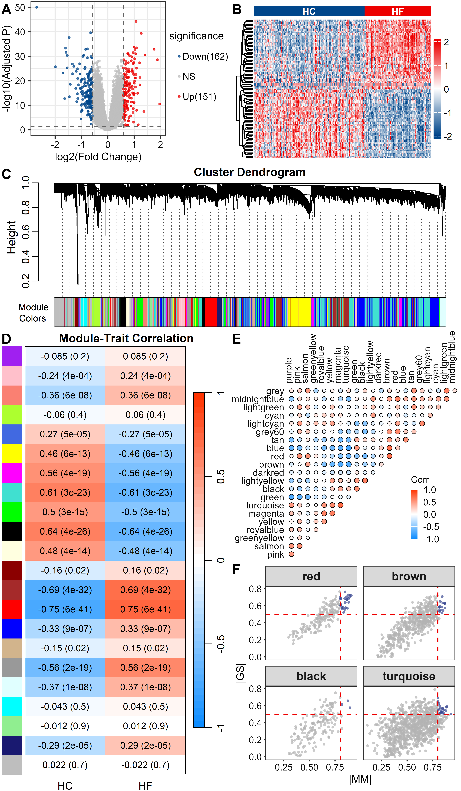

![]()
library(tidyverse)
library(data.table)
library(openxlsx)
library(curl)
library(GEOquery)
library(limma)
library(sva)
library(AnnoProbe)
library(genefilter)
library(org.Hs.eg.db)
library(TxDb.Hsapiens.UCSC.hg19.knownGene)
library(WGCNA)
library(flashClust)
library(robustbase)
library(dynamicTreeCut)
library(GenomicRanges)
library(RColorBrewer)
library(ggsci)
library(ggpubr)
library(ggvenn)
library(corrplot)
library(ComplexHeatmap)
library(circlize)
library(cowplot)
library(magick)2.Transcriptomic Data Acquisition and DCM-CHF Disease Target Screening
Load packages
1 Acquisition of GEO dataset
1.1 GSE57338
313 individuals with/without Heart Failure
https://www.ncbi.nlm.nih.gov/geo/query/acc.cgi?acc=GSE57338
raw_dir <- "../data/raw/geo/GSE57338"
if (!dir.exists(raw_dir)) dir.create(raw_dir, recursive = TRUE)
Sys.setlocale("LC_ALL", "C")
gse57338 <- getGEO("GSE57338", destdir = raw_dir, getGPL = TRUE, AnnotGPL = F)
Sys.setlocale("LC_ALL", "")
gse57338_pheno_raw <- pData(gse57338[[1]])
gse57338_exprs_raw <- exprs(gse57338[[1]])
gse57338_gpl <- gse57338[[1]]@annotation
save(
gse57338_pheno_raw,
gse57338_exprs_raw,
gse57338_gpl,
file = "../data/raw/geo/gse57338_raw.RData"
)1.2 GSE116250
high throughput sequencing, GPL16791
64 samples from human left ventricle tissue: 14 non-failing donors, 37 dilated cardiomyopathy, and 13 ischemic cardiomyopathy
N_DCM/N_NF = 37 / 14
1.3 GSE5406
array, GPL96
https://www.ncbi.nlm.nih.gov/geo/query/acc.cgi?acc=GSE5406
n_DCM = 86, n_IDC = 108, n_HF = 16
rm(list=ls())
raw_dir <- "../data/raw/geo/GSE5406"
if (!dir.exists(raw_dir)) dir.create(raw_dir, recursive = TRUE)
Sys.setlocale("LC_ALL", "C")
gse5406 <- getGEO("GSE5406", destdir = raw_dir, getGPL = TRUE, AnnotGPL = F)
Sys.setlocale("LC_ALL", "")
gse5406_pheno_raw <- pData(gse5406[[1]])
gse5406_exprs_raw <- exprs(gse5406[[1]])
gse5406_gpl <- gse5406[[1]]@annotation
save(
gse5406_pheno_raw,
gse5406_exprs_raw,
gse5406_gpl,
file = "../data/raw/geo/gse5406_raw.RData"
)1.4 GSE183852
scRNA-Seq
https://www.ncbi.nlm.nih.gov/geo/query/acc.cgi?acc=GSE183852
NOTE: Proceed with caution! GSE183852_DCM_Integrated.Robj.gz is 11.7GB. Long download time.
Alternative: download directly via browser from https://www.ncbi.nlm.nih.gov/geo/query/acc.cgi?acc=GSE183852
rm(list=ls())
raw_dir <- "../data/raw/geo/GSE183852"
if (!dir.exists(raw_dir)) dir.create(raw_dir, recursive = TRUE)
Sys.setlocale("LC_ALL", "C")
gse183852 <- getGEO("GSE183852", destdir = raw_dir, getGPL = TRUE, AnnotGPL = F)
Sys.setlocale("LC_ALL", "")
gse183852_pheno_raw <- pData(gse183852[[1]])
gse183852_gpl <- gse183852[[1]]@annotation
save(
gse183852_gpl,
gse183852_pheno_raw,
file = "../data/raw/geo/gse183852_raw.RData"
)
url <- "https://www.ncbi.nlm.nih.gov/geo/download/?acc=GSE183852&format=file&file=GSE183852%5FIntegrated%5FCounts%2Ecsv%2Egz"
h <- new_handle()
curl_fetch_disk(url, path = "../data/raw/geo/GSE183852/GSE183852_Integrated_Counts.csv.gz",handle = h)
# 11.7 GB
url <- "https://www.ncbi.nlm.nih.gov/geo/download/?acc=GSE183852&format=file&file=GSE183852%5FDCM%5FIntegrated%2ERobj%2Egz"
h <- new_handle()
curl_fetch_disk(url, path = "../data/raw/geo/GSE183852/GSE183852_DCM_Integrated.Robj.gz",handle = h)
rm(list=ls())
gc()2 Preprocessing of GSE57338
2.1 Load data
rm(list = ls())
load("../data/raw/geo/GSE57338_raw.RData")
HC <- gse57338_pheno_raw$`disease status:ch1` == "non-failing"
HF <- gse57338_pheno_raw$`disease status:ch1` == "idiopathic dilated CMP"
keep_samples <- rownames(gse57338_pheno_raw)[HC | HF]
pheno <- gse57338_pheno_raw[keep_samples, ]
pheno$group <- ifelse(pheno$`disease status:ch1` == "non-failing", "HC", "HF")
pheno$group <- factor(pheno$group, levels = c("HC", "HF"))
expr_keep <- gse57338_exprs_raw[,keep_samples]2.2 Preprocessing
# log2 transformation
ex <- expr_keep
qx <- as.numeric(quantile(ex, c(0., 0.25, 0.5, 0.75, 0.99, 1.0), na.rm=T))
LogC <- (qx[5] > 100) ||
(qx[6]-qx[1] > 50 && qx[2] > 0)
if (LogC) { ex[which(ex <= 0)] <- NaN
expr_keep <- log2(ex) }
# check GPL and annotate the probes to genes.
probe2gene=idmap(gse57338_gpl)
expr_annotated <- filterEM(expr_keep, probe2gene)
# Processing of duplicated genes
expr <- as.matrix(expr_annotated)
if (any(duplicated(rownames(expr)))) {
expr <- aggregate(expr, by = list(rownames(expr)), FUN = mean)
rownames(expr) <- expr[,1]
expr <- expr[,-1]
expr <- as.matrix(expr)
}2.2.1 Figure S1A
# Express the overall distribution of values and observe where the "tail" of background noise falls
expr_density <- reshape2::melt(expr) %>%
dplyr::rename(Gene = Var1, Sample = Var2)
lancet_colors <- pal_lancet()(9)
col1 <- lancet_colors[2]
col2 <- lancet_colors[1]
n_samples <- length(unique(expr_density$Sample))
sample_colors <- colorRampPalette(c(col1, col2))(n_samples)
pS1A <- ggplot(expr_density, aes(x = value, color = Sample)) +
geom_density(show.legend = FALSE,linewidth = 0.2) +
scale_color_manual(values = sample_colors) +
labs(title = "Expression density of samples",
x = "log2(Expression)", y = "Density") +
theme_bw(base_size = 10) +
scale_x_continuous(breaks = seq(from = floor(min(expr_density$value)), to = ceiling(max(expr_density$value)), by = 1)) +
geom_vline(xintercept = 3, linetype = "dashed", color = lancet_colors[2], linewidth = 0.5) +
theme(plot.title = element_text(hjust = 0.5,size = 10),
axis.title = element_text(size = 9),
axis.text = element_text(size = 8,color = "grey5"),
axis.ticks.length = unit(0.5, "mm"),
axis.ticks = element_line(linewidth = 0.5))
# pS1A
ggsave("../supplementary/figures/Figure_S1_A.png", pS1A, width = 7, height = 5,units = "cm", dpi = 600)
2.2.2 Figure S1C: Check normalization
# Filtering low expression genes
threshold_log2 <- 3
ffun <- filterfun(pOverA(p = 0.5, A = threshold_log2))
keep <- genefilter(expr, ffun)
expr_filt <- expr[keep, ]
dim(expr_filt)
expr_melt <- reshape2::melt(expr_filt, varnames = c("Gene", "Sample"), value.name = "log2_expr")
pS1C <- ggplot(expr_melt, aes(x = Sample, y = log2_expr)) +
geom_boxplot(fill="lightblue", outlier.shape = 1, outlier.size = 0.3,outlier.stroke = 0.1, linewidth =0.3) +
# scale_fill_lancet() +
labs(title = "Check normalization of samples", y = "log2( Expression)") +
theme_bw(base_size = 10) +
theme(axis.text.x = element_blank(),
axis.ticks.x = element_blank(),
axis.title = element_text(size = 9),
axis.text.y = element_text(size = 8,color = "grey5"),
axis.ticks.y.length = unit(0.5, "mm"),
axis.ticks = element_line(linewidth = 0.5),
plot.title = element_text(hjust = 0.5, size = 10)) +
geom_hline(yintercept = median(expr_melt$log2_expr, na.rm = TRUE), linetype = "dashed", linewidth =0.5, color =lancet_colors[2])
# pS1C
ggsave("../supplementary/figures/Figure_S1C.png", pS1C, width = 14, height = 5,units = "cm", dpi = 600)
2.2.3 Figure S1B: PCA
pca <- prcomp(t(expr_filt), scale. = TRUE)
pca_df <- data.frame(pca$x[,1:2], Group = pheno$group)
pS1B <- ggplot(pca_df, aes(x = PC1, y = PC2, color = Group)) +
scale_color_lancet() +
geom_point(size = 1) +
stat_ellipse() +
labs(title = "PCA of samples") +
theme_bw(base_size = 10) +
theme(
plot.title = element_text(hjust = 0.5, size = 10),
axis.title = element_text(size = 9),
axis.text = element_text(size = 8),
axis.ticks.length = unit(0.5, "mm"),
axis.ticks = element_line(linewidth = 0.5),
legend.position = "right",
legend.title = element_text(size = 9),
legend.text = element_text(size = 8,color = "grey5"),
legend.spacing.x = unit(0, "cm"),
legend.key.width = unit(0.5, "cm"),
legend.box.margin = margin(t = 0, r = 0, b = 0, l = -2.5, unit = "mm"),
legend.margin = margin(t = 0, r = 0, b = 0, l = 0, unit = "mm")
)
# pS1B
ggsave("../supplementary/figures/Figure_S1B.png",pS1B, width = 7,height = 5,units = "cm", dpi = 600)
2.2.4 Correlation within the group
cor_mat <- cor(expr_filt)
within_cor <- sapply(colnames(expr_filt), function(s) {
idx <- which(pheno$geo_accession == s)
gr <- pheno$group[idx]
same_group <- pheno$geo_accession[pheno$group == gr]
same_group <- setdiff(same_group, s)
if (length(same_group) == 0) return(NA)
mean(cor_mat[s, same_group], na.rm = TRUE)
})
between_cor <- sapply(colnames(expr_filt), function(s) {
idx <- which(pheno$geo_accession == s)
gr <- pheno$group[idx]
diff_group <- pheno$geo_accession[pheno$group != gr]
if(length(diff_group)==0) return(NA)
mean(cor_mat[s, diff_group], na.rm = TRUE)
})
mean_within = mean(within_cor, na.rm = TRUE)
mean_between = mean(between_cor, na.rm = TRUE)
cat("Average correlation coefficient within the group：", round(mean_within, 4), "\n")
cat("Average correlation coefficient between groups：", round(mean_between, 4), "\n")
if (mean_within > mean_between) {
cat("✅ No significant batch effect\n")
} else {
cat("⚠️ Have significant batch effect, suggest batch correction(ComBat/SVA)\n")
}
save(pheno, expr_filt, file = "../data/processed/geo/gse57338.RData")2.2.5 Figure S1: cowplot
top <- plot_grid(pS1A, pS1B, ncol = 2, labels = c("A", "B"),
label_size = 12, label_fontface = "bold",
align = "h", axis = "tb")
bottom <- plot_grid(pS1C, labels = "C", label_size = 12, label_fontface = "bold")
sf1_combined <- plot_grid(top, bottom, ncol = 1, rel_heights = c(1, 1))
ggsave("../supplementary/figures/Figure_S1.png",
sf1_combined, width = 14, height = 10, units = "cm", dpi = 600)
3 DEG
3.1 DEGs
load("../data/processed/geo/gse57338.RData")
group <- factor(pheno$group)
design <- model.matrix(~ 0 + group)
colnames(design) <- levels(group)
contr <- paste(levels(group)[2], levels(group)[1], sep = "-")
contr.matrix <- makeContrasts(contrasts = contr, levels = design)
fit <- lmFit(expr_filt, design)
fit2 <- contrasts.fit(fit, contr.matrix)
fit2 <- eBayes(fit2)
res <- topTable(fit2, adjust = "fdr", number = Inf)
save(res, file = "../data/processed/geo/gse57338_res.RData")3.2 Significant DEGs
# lfc <- log2(1.5)
lfc <- 0.585
deg_all <- as.data.frame(res) %>%
dplyr::rename(log2FC = logFC)
deg_up <- deg_all %>% filter(adj.P.Val < 0.05, log2FC > lfc)
deg_down <- deg_all %>% filter(adj.P.Val < 0.05, log2FC < -lfc)
cat("The number of all DEGs:", nrow(deg_all), "\n")
cat("The number of up DEGs:", nrow(deg_up), "\n")
cat("The number of down DEGs:", nrow(deg_down), "\n")3.3 Figure 1A: Volcano Plot
deg_all$significance <- ifelse(
deg_all$`adj.P.Val` < 0.05 & abs(deg_all$log2FC) > lfc,
ifelse(deg_all$log2FC > lfc, paste0("Up(",nrow(deg_up),")"), paste0("Down(",nrow(deg_down),")")), "NS")
p1A <- ggplot(deg_all, aes(x = log2FC, y = -log10(adj.P.Val), color = significance)) +
geom_point(alpha = 0.7, size = 0.5) +
scale_color_manual(values = c(pal_lancet()(9)[1], "gray", pal_lancet()(9)[2])) +
geom_vline(xintercept = c(-lfc, lfc), linetype = "dashed", color = "gray40", linewidth = 0.4) +
geom_hline(yintercept = -log10(0.05), linetype = "dashed", color = "gray40", linewidth = 0.4) +
labs(
# tag = "A",
x = "log2(Fold Change)",
y = "-log10(Adjusted P)") +
theme_bw(base_size = 10) +
theme(
plot.title = element_text(hjust = 0.5, size = 10),
axis.title = element_text(size = 9),
axis.text = element_text(size = 8, color = "grey5"),
legend.position = "right",
legend.title = element_text(size = 9),
legend.text = element_text(size = 8, margin = margin(l = -0.2, unit = "cm")),
legend.box.spacing = unit(0.1, "cm"),
legend.box.margin = margin(0, 0, 0, 0),
legend.margin = margin(0, 0, 0, 0),
# plot.tag = element_text(size = 12, face = "bold"),
# plot.tag.position = c(0.02, 0.97),
plot.margin = margin(t = 1, r = 2, b = 2, l = 2)
)
ggsave("../main/figures/Figure_1A.png", p1A, width = 7,height = 5, units = "cm", dpi = 600)
ggsave("../main/figures/Figure_1A.pdf", p1A, width = 7,height = 5, units = "cm")
3.4 Figure 1B. Heatmap
deg_sig <- deg_all %>% filter(adj.P.Val < 0.05, abs(log2FC) > lfc)
N_top <- 50
up_top <- deg_sig %>%
filter(log2FC > 0) %>%
arrange(desc(log2FC)) %>%
head(N_top)
down_top <- deg_sig %>%
filter(log2FC < 0) %>%
arrange(log2FC) %>%
head(N_top)
heat_genes <- c(rownames(up_top), rownames(down_top))
sample_order <- pheno %>%
arrange(group) %>%
pull(geo_accession)
deg_top100 <- expr_filt[heat_genes, sample_order]
deg_top100_z <- t(scale(t(deg_top100)))
breaks <- seq(-2, 2, length.out = 100)
palette <- colorRampPalette(c(pal_lancet()(9)[1], "white", pal_lancet()(9)[2]))(99)
if (length(breaks) == length(palette)) {
col_fun <- colorRamp2(breaks, palette)
} else {
mid_breaks <- (breaks[-1] + breaks[-length(breaks)]) / 2
col_fun <- colorRamp2(mid_breaks, palette)
}
sample_order <- pheno %>%
arrange(group) %>%
pull(geo_accession)
# Group annotation
anno_col <- data.frame(
Group = pheno$group[match(sample_order, pheno$geo_accession)]
)
rownames(anno_col) <- sample_order
anno_col$Group <- factor(anno_col$Group, levels = c("HF", "HC"))
ha <- HeatmapAnnotation(
group_label = anno_block(
which = "column",
gp = gpar(fill = NA, col = NA),
panel_fun = function(index, nm) {
n <- length(index)
group_vec <- anno_col$Group[index]
col_map <- c("HF" = lancet_colors[2], "HC" = lancet_colors[1])
colors <- col_map[group_vec]
for (i in seq_along(index)) {
x_left <- (i - 1) / n
grid.rect(
x = x_left, y = 0,
width = 1 / n, height = 1,
just = c("left", "bottom"),
gp = gpar(fill = colors[i], col = NA)
)
}
rle_res <- rle(as.character(group_vec))
cum_pos <- cumsum(c(0, rle_res$lengths[-length(rle_res$lengths)])) / n
for (i in seq_along(rle_res$values)) {
center_x <- cum_pos[i] + (rle_res$lengths[i] / n) / 2
grid.text(
label = rle_res$values[i],
x = center_x,
y = 0.5,
gp = gpar(fontsize = 8, fontface = "bold", col = "white")
)
}
}
),
show_legend = FALSE,
show_annotation_name = FALSE,
annotation_height = unit(0.3, "cm")
)
ht_opt(HEATMAP_LEGEND_PADDING = unit(0, "mm"))
p1B <- Heatmap(
deg_top100_z,
name = "Log2FC",
col = col_fun,
show_row_names = FALSE,
show_column_names = FALSE,
cluster_rows = TRUE,
cluster_columns = FALSE,
show_column_dend = FALSE,
row_dend_width = unit(0.08, "npc"),
border = FALSE,
top_annotation = ha,
# show_heatmap_legend = FALSE, # Annotate when drawing p1B
heatmap_legend_param = list(
title = "",
labels_gp = gpar(fontsize = 8, color="grey5"),
legend_width = unit(0.3, "cm"),
legend_height = unit(3, "cm"),
grid_width = unit(0.2, "cm"),
legend.space = unit(1, "mm"),
legend.margin = unit(c(0, 0, 0, 0), "mm")
)
)
png(filename = "../main/figures/Figure_1B.png",
width = 7, height = 5,
units = "cm",
pointsize = 10,
res = 600)
p1B
dev.off()
pdf(file = "../main/figures/Figure_1B.pdf",
width = 7, height = 5,
pointsize = 10)
p1B
dev.off()
3.5 Saving DEG Results
4 WGCNA
4.1 Load Data
rm(list = ls())
load("../data/processed/geo/gse57338.RData")
# expression matrix
# WGCNA required: Sample (row) x Gene(column)
dat <- expr_filt
common_samples <- intersect(colnames(dat), rownames(pheno))
dat <- dat[, common_samples, drop = FALSE]
pheno_wgcna <- pheno[match(common_samples, rownames(pheno)), , drop = FALSE]
if (ncol(dat) == nrow(pheno_wgcna)) {
datExpr <- as.data.frame(t(dat))
} else if (nrow(dat) == nrow(pheno_wgcna)) {
datExpr <- as.data.frame(dat)
} else {
stop("Error: Sample dimension mismatch between expression matrix and phenotype data.")
}
rownames(datExpr) <- common_samples
dim(datExpr)
# trait: group (HC=0, HF=1)
datTraits <- data.frame(
Group = factor(pheno_wgcna$group)
)
rownames(datTraits) <- colnames(expr_filt)
datTraits$Disease <- ifelse(pheno_wgcna$group == "HF", 1, 0)4.2 Sample clustering (checking for outlier samples, quality control)
# goodSamplesGenes
# Quality control: Remove bad genes/samples
gsg <- goodSamplesGenes(datExpr, verbose = 3)
if (!gsg$allOK) {
if (sum(!gsg$goodGenes) > 0) {
printFlush(paste("Removing genes:", paste(names(datExpr)[!gsg$goodGenes], collapse = ",")))
}
if (sum(!gsg$goodSamples) > 0) {
printFlush(paste("Removing samples:", paste(rownames(datExpr)[!gsg$goodSamples], collapse = ",")))
}
datExpr <- datExpr[gsg$goodSamples, gsg$goodGenes]
}
# Screening for highly variable genes: MAD. Retain the first 5000
gene_mad <- apply(datExpr, 2, mad, na.rm = TRUE)
N_top <- 5000
n_select <- min(N_top, ncol(datExpr))
selected_genes <- names(sort(gene_mad, decreasing = TRUE)[1:n_select])
datExpr <- datExpr[, selected_genes]
cat("Retain the number of highly variable genes：", ncol(datExpr), "\n")
save(datTraits,datExpr,pheno_wgcna,file = "../data/processed/geo/gse57338_datExpr.RData")4.2.1 Figure S2A
# Sample clustering: sampleTree
sampleTree <- hclust(dist(datExpr), method = "average")
group_color = ifelse(pheno_wgcna$group=="HF",pal_lancet()(9)[2],pal_lancet()(9)[1])
color_mat <- cbind(Group = group_color)
png(filename = "../supplementary/figures/Figure_S2A.png",
width = 14,
height = 5,
units = "cm",
res = 600,
pointsize = 10)
par(ps=10,
lwd = 0.5,
font.lab = 1,
font.main=2,
mai=c(0,0,0,0),
oma=c(0,0,0,0)
)
plotDendroAndColors(
dendro = sampleTree,
colors = color_mat,
dendroLabels = FALSE,
addGuide = TRUE,
# guideCol = "grey",
main = "Sample clustering",
cex.dendroLabels = 0.8,
cex.colorLabels = 1,
cex.axis = 0.9,
cex.lab = 1,
cex.main = 1.0,
marAll = c(0.1, 3, 0.8, 0),
saveMar = TRUE,
lwd = 0.5,
mgp = c(2, 1, 0)
)
dev.off()
4.3 Step 3: Select soft threshold
# load("../data/processed/geo/gse57338_datExpr.RData")
enableWGCNAThreads()
powers <- c(c(1:10), seq(from = 12, to=30, by=2))
R2_cut <- 0.8
sft <- pickSoftThreshold(
datExpr,
powerVector = powers,
RsquaredCut = R2_cut,
verbose = 5,
networkType = "unsigned"
)
disableWGCNAThreads()
power <- sft$powerEstimate
if(is.na(power)) power <- 8
cat("power = ", power, "\n")
save(sft,powers, R2_cut, file="../data/processed/geo/gse57338_sft.RData")4.3.1 Figure S2B
load("../data/processed/geo/gse57338_sft.RData")
df <- data.frame(
Power = sft$fitIndices[,1],
R2 = -sign(sft$fitIndices[,3]) * sft$fitIndices[,2],
Connectivity = sft$fitIndices[,5]
)
# Left Figure: R² vs Soft Power
pS2B1 <- ggplot(df, aes(x = Power, y = R2)) +
geom_text(aes(label = Power), size = 2.5, color = pal_aaas()(10)[2]) +
geom_hline(yintercept = R2_cut, linetype = "dashed", color = pal_aaas()(10)[2], linewidth = 0.8) +
labs(x = "Soft Power", y = expression(Scale ~ Free ~ R^2)) +
theme_bw(base_size = 10) +
theme(
panel.grid = element_blank(),
axis.title = element_text(size = 9),
axis.text = element_text(size = 8, color = "grey"),
plot.margin = margin(1, 2, 1, 2, unit = "mm")
)
# Right Figure：Mean Connectivity vs Soft Power
pS2B2 <- ggplot(df, aes(x = Power, y = Connectivity)) +
geom_text(aes(label = Power), size = 2.5, color = pal_aaas()(10)[2]) +
labs(x = "Soft Power", y = "Mean Connectivity") +
theme_bw(base_size = 10) +
theme(
panel.grid = element_blank(),
axis.title = element_text(size = 9),
axis.text = element_text(size = 8, color = "grey5"),
plot.margin = margin(1, 2, 1, 2, unit = "mm")
)
pS2B <- plot_grid(pS2B1, pS2B2, ncol = 2, align = "h")
ggsave("../supplementary/figures/Figure_S2_B.png",
plot = pS2B,
width = 14,
height = 5,
units = "cm",
dpi = 600)
4.4 Step 4: Construct a co-expression network
enableWGCNAThreads()
set.seed(123)
net <- blockwiseModules(
datExpr,
power = power,
TOMType = "unsigned",
minModuleSize = 30, # Minimum number of genes in the module
mergeCutHeight = 0.25, # Merge similar modules
numericLabels = TRUE,
pamRespectsDendro = FALSE,
verbose = 3
)
disableWGCNAThreads()
save(net,file = "../data/processed/geo/gse57338_net.RData")4.5 Step 5: Clustering
4.5.1 Figure 1C: WGCNA gene clustering tree
png(
"../main/figures/Figure_1C.png",
width = 14,
height = 5,
units = "cm",
res = 600,
pointsize = 10
)
par(ps = 10, font.lab = 1, font.main=2)
plotDendroAndColors(
net$dendrograms[[1]],
moduleColors[net$blockGenes[[1]]],
"Module\nColors ",
dendroLabels = FALSE,
addGuide = TRUE,
guideHang = 0.2,
colorHeight = 0.1,
cex.axis = 0.9,
cex.text = 0.8,
cex.dendroLabels = 0.8,
cex.colorLabels = 0.8,
cex.lab = 1,
cex.main = 1,
# main ="",
marAll = c(0.1, 2.8, 1, 0),
saveMar = TRUE,
mgp = c(1.5, 0.5, 0),
lwd = 1,
guideLwd = 1
)
dev.off()
4.6 Step 6: Module correlation with diseases
load("../data/processed/geo/gse57338_datExpr.RData")
MEs <- net$MEs
MEs0 <- moduleEigengenes(datExpr, moduleColors)$eigengenes
MEs <- orderMEs(MEs0)
datTraits <- model.matrix(~0 + group, data = data.frame(group = pheno_wgcna$group))
colnames(datTraits) <- levels(factor(pheno_wgcna$group))
rownames(datTraits) <- rownames(pheno_wgcna)
moduleTraitCor <- cor(MEs, datTraits, use = "p")
moduleTraitPvalue <- corPvalueStudent(moduleTraitCor, nrow(datExpr))
textmatrix <- paste0(signif(moduleTraitCor, 2), " (", signif(moduleTraitPvalue, 1), ")")
dim(textmatrix) <- dim(moduleTraitCor)
wgcna_colors <- blueWhiteRed(50)4.6.1 Figure 1D: Module phenotype correlation heatmap
png(
"../main/figures/Figure_1D.png",
width = 7,
height = 14,
units = "cm",
res = 600,
pointsize = 10
)
par(ps = 10, font.lab = 1, font.main=2,
mar = c(1.2, 1.8, 1.2, 0.2))
labeledHeatmap(
Matrix = moduleTraitCor,
xLabels = colnames(datTraits), # HC + HF
yLabels = names(MEs),
colors = wgcna_colors,
textMatrix = textmatrix,
setStdMargins = FALSE,
cex.text = 0.8,
cex.lab = 0.9,
cex.main = 1,
cex.legendLabel = 0.8,
zlim = c(-1, 1),
main = "Module-Trait Correlation",
xLabelsAngle = 0,
xLabelsAdj = 0.5
)
dev.off()
4.8 Step 8: geo_genes: intersecting DEGs and WGCNA
wgcna_genes_df <- wgcna_Genes[,"Gene"]
save(wgcna_genes_df, file = "../data/processed/geo/gse57338_wgcna_genes.RData")
rm(list = ls())
load("../data/processed/geo/gse57338_degs_results.RData")
load("../data/processed/geo/gse57338_wgcna_genes.RData")
deg_genes <- rownames(deg_sig)
wgcna_genes <- wgcna_genes_df$Gene
# geo_genes: intersecting DEGs and WGCNA
geo_genes <- intersect(deg_genes,wgcna_genes)
deg_genes_df <- data.frame(Gene = deg_genes)
geo_genes_df <- data.frame(Gene = geo_genes) %>%
arrange(Gene)
gene_list <- list(
DEGs = deg_genes,
`WGCNA Genes` = wgcna_genes
)
p <- ggvenn(
gene_list,
fill_color = pal_aaas()(2),
stroke_color = "white",
stroke_size = 1,
set_name_size = 5,
text_size = 5,
text_color = "white",
show_percentage = FALSE
) +
theme(plot.title = element_text(hjust = 0.5, size=10))
# save
# ggsave("../main/figures/Figure_1G.pdf", p, width=6, height=6, dpi=300)
p
save(deg_genes_df, wgcna_genes_df,geo_genes_df, file = "../data/processed/geo/geo_genes.RData")
write.xlsx(
list(
DEGs = deg_genes_df,
WGCNAGenes = wgcna_genes_df
),
"../supplementary/tables/Table_S3.xlsx"
)
deg_candidate <- deg_sig[rownames(deg_sig) %in% geo_genes, ]
up_genes <- rownames(deg_candidate[ deg_candidate$significance =="Up(151)",])
down_genes <- rownames(deg_candidate[ deg_candidate$significance =="Down(162)",])
cat("Up genes: ", length(up_genes), "\n")
print(up_genes)
cat("\nDown genes: ", length(down_genes), "\n")
print(down_genes)4.9 Figure 1: magick
layout: A + B / C / D + (E/F)
files <- c(
"../main/figures/Figure_1A.png",
"../main/figures/Figure_1B.png",
"../main/figures/Figure_1C.png",
"../main/figures/Figure_1D.png",
"../main/figures/Figure_1E.png",
"../main/figures/Figure_1F.png"
)
labels <- c("A", "B", "C", "D", "E", "F")
imgs <- list()
for (i in seq_along(files)) {
img <- image_read(files[i])
img <- image_annotate(
img,
labels[i],
gravity = "northwest",
location = "+10+10",
size = 100, # px, ~ 12pt
weight = 700,
color = "black"
)
imgs[[i]] <- img
}
row1 <- image_append(c(imgs[[1]],imgs[[2]]), stack = FALSE)
row2 <- image_append(c(imgs[[3]]), stack = FALSE)
ef <- image_append(c(imgs[[5]],imgs[[6]]), stack = TRUE)
row3 <- image_append(c(imgs[[4]],ef), stack = FALSE)
p1 <- image_append(c(row1, row2, row3), stack = TRUE)
image_write(p1, "../main/figures/Figure_1.png", format = "png",depth =16)
5 HERMES_DCM_genes
5.1 HERMES_DCM_genes
https://www.nature.com/articles/s41467-023-39253-3
# 1. 分类型基因列表存储
dcm_gene_list <- list(
# 经典临床单基因致病基因
classic_mendelian = c(
"TTN", "BAG3", "FLNC", "LMNA", "LDB3", "MYPN", "NEXN",
"OBSCN", "VCL", "MYBPC3", "ALPK3", "FHOD3", "PRDM16"
),
# 本文新发现罕见高风险致病基因(RVAS验证)
novel_rare_causal = c("SSPN", "MAP3K7", "NEDD4L"),
# GWAS多基因易感基因（按通路汇总全部62个效应基因）
gwas_susceptible = c(
# 肌小节/骨架
"MYPN", "HSPB8", "ALPK3", "ACTN2", "SPATS2L", "MAPT", "MYL6",
"PDLIM5", "MTSS1", "STRN", "TMEM182", "PLN", "CSRP3", "SYNPO2L",
"MLIP", "TKT",
# TGF-β/Wnt纤维化通路
"BAMBI", "INHBB", "THBS1", "CAMK2D", "MAP3K7", "NEDD4L",
"NFATC1", "PRKCA", "RNF207",
# 蛋白稳态/热休克/内质网应激
"HSPA4", "HSPB7", "HSPB8", "BAG3", "FBXO32", "DNAJC18",
"CRYAB", "DERL3",
# 基质黏附
"COL4A1", "ITGA5", "EPHB1", "THBS1", "PDLIM5", "SSPN",
# 离子通道/心脏转录因子
"PITX2", "KCNIP2", "SLC6A6", "MITF", "GATA4",
# 代谢线粒体其他
"CHCHD10", "DMPK", "SLC6A6", "RRAS2", "FOXN3", "CDKN1A",
"PROM1", "HLF"
)
)
# 2. 转为data.frame表格，用于查看、导出csv
# 拆分为长格式表格
dcm_gene_df <- bind_rows(
tibble(
gene_category = "经典孟德尔单基因致病",
gene_symbol = dcm_gene_list$classic_mendelian
),
tibble(
gene_category = "本研究新发现罕见致病基因",
gene_symbol = dcm_gene_list$novel_rare_causal
),
tibble(
gene_category = "GWAS多基因易感效应基因",
gene_symbol = dcm_gene_list$gwas_susceptible
)
)
# 查看表格
print(dcm_gene_df, n = Inf)
# 导出CSV（可选）
# write.csv(dcm_gene_df, "DCM_NatureGenes_2024.csv", row.names = F)
# 3. 按通路拆分单独数据框（如需通路注释）
pathway_gene <- list(
sarcomere_cytoskeleton = c("MYPN", "HSPB8", "ALPK3", "ACTN2", "SPATS2L", "MAPT", "MYL6", "PDLIM5", "MTSS1", "STRN", "TMEM182", "PLN", "CSRP3", "SYNPO2L", "MLIP", "TKT"),
tgf_wnt_fibrosis = c("BAMBI", "INHBB", "THBS1", "CAMK2D", "MAP3K7", "NEDD4L", "NFATC1", "PRKCA", "RNF207"),
protein_homeostasis = c("HSPA4", "HSPB7", "HSPB8", "BAG3", "FBXO32", "DNAJC18", "CRYAB", "DERL3"),
cell_adhesion_matrix = c("COL4A1", "ITGA5", "EPHB1", "THBS1", "PDLIM5", "SSPN"),
ion_channel_transcription = c("PITX2", "KCNIP2", "SLC6A6", "MITF", "GATA4"),
metabolism_mitochondria = c("CHCHD10", "DMPK", "SLC6A6", "RRAS2", "FOXN3", "CDKN1A", "PROM1", "HLF")
)5.2 all hermes_dcm_genes
hermes_dcm_genes <- c(
# 经典孟德尔单基因致病
"TTN", "BAG3", "FLNC", "LMNA", "LDB3", "MYPN", "NEXN", "OBSCN", "VCL", "MYBPC3", "ALPK3", "FHOD3", "PRDM16",
# 本研究新发现罕见致病基因
"SSPN", "MAP3K7", "NEDD4L",
# GWAS去重易感基因（剔除和上面重复的）
"ACTN2", "SPATS2L", "MAPT", "MYL6", "PDLIM5", "MTSS1", "STRN", "TMEM182", "PLN", "CSRP3", "SYNPO2L", "MLIP", "TKT",
"BAMBI", "INHBB", "THBS1", "CAMK2D", "NFATC1", "PRKCA", "RNF207",
"HSPA4", "HSPB7", "FBXO32", "DNAJC18", "CRYAB", "DERL3",
"COL4A1", "ITGA5", "EPHB1",
"PITX2", "KCNIP2", "SLC6A6", "MITF", "GATA4",
"CHCHD10", "DMPK", "RRAS2", "FOXN3", "CDKN1A", "PROM1", "HLF"
)5.3 review_genes
https://pmc.ncbi.nlm.nih.gov/articles/PMC13122708/
6 clinGen
clinGen <- c(
"ACTC1", "ACTN2", "BAG3", "BAG5", "DES", "DSP", "FLII", "FLNC",
"JPH2", "LDB3", "LMNA", "LMOD2", "MYH7", "MYLK3", "MYZAP", "NKX2-5",
"NEXN", "NRAP", "PLN", "PPA2", "PLEKHM2", "PPP1R13L", "PRDM16", "RBM20",
"RPL3L", "SCN5A", "TBX20", "TNNI3", "TNNI3K", "TNNC1", "TNNT2", "TPM1",
"TTN", "VCL"
)7 dcm_all_51_genes
https://www.ahajournals.org/doi/10.1161/CIRCULATIONAHA.120.053033
dcm_all_51_genes <- c(
"ABCC9", "ACTC1", "ACTN2", "ANKRD1", "BAG3", "CSRP3", "DES",
"DMD", "DNAJC19", "DSP", "ELAC2", "EMD", "FLNC", "GATAD1",
"HCN4", "ILK", "JPH2", "LAMA4", "LMNA", "MIB1", "MYH6", "MYH7",
"MYPN", "NEXN", "NKX2-5", "PDLIM3", "PKP2", "PLN", "RBM20",
"SCN5A", "SDHA", "SGCD", "TGFB3", "TMEM43", "TNNC1", "TNNI3",
"TNNT2", "TPM1", "TTN", "VCL", "LDB3", "TMPO", "EYA4", "PSEN1",
"PSEN2", "CRYAB", "HSPB8", "LMNB1", "OPA1", "PRKAG2", "RAB3GAP2"
)